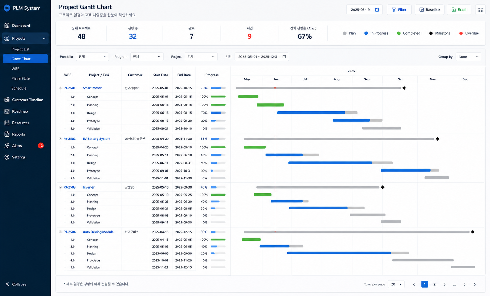
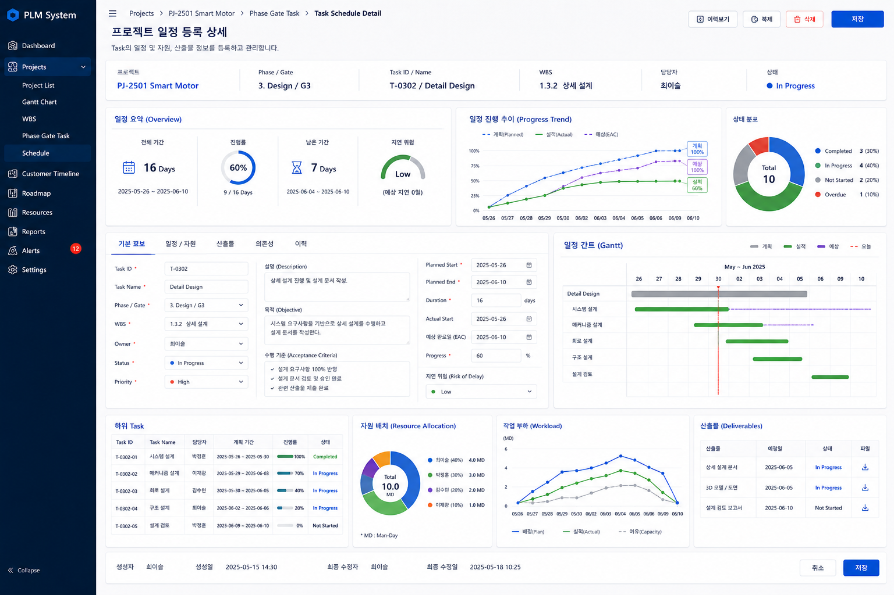
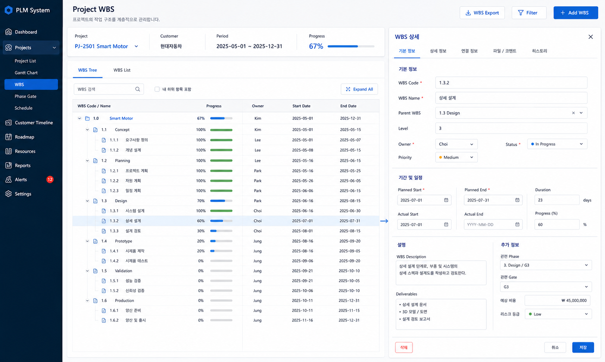

체계적 관리로 프로젝트 성공까지
모던 엔터프라이즈 워크플로를 위한 스마트한 프로젝트 실행
WBS & 간트차트 관리
비주얼 간트차트로 일정과 WBS를 한눈에.
Critical Path 분석
CPM 자동 산출로 병목·지연 위험을 조기 식별.
역할별 대시보드
경영자·관리자·실무자 맞춤 3단계 뷰.
Gate Review 관리
단계별 승인·체크리스트 기반 품질 관리.
이슈 · 리스크 관리
선제적 리스크 식별과 자동 에스컬레이션.
리소스 배분 관리
부하 분석 기반 최적 인력·자원 배정.
업무 단계별 상세 기능
일정·품질·리스크·리소스 관리 기능을 실제 화면과 함께 소개합니다.
WBS 기반
스마트 간트 차트
프로젝트의 핵심 경로(CPM)를 자동으로 계산하고, 베이스라인(Baseline) 대비 실적을 시각적으로 비교합니다. 다양한 표준 템플릿을 제공하며, Excel Import/Export를 통해 기존 자료를 손쉽게 이관할 수 있습니다.
- Critical Path 자동 산출 및 하이라이트
- 계획(Baseline) vs 실적(Actual) 비교 보기
- 선후행 관계(FS, SS, FF, SF) 설정
- 다양한 표준 WBS 템플릿 제공

단계별 의사결정
이력 추적
프로젝트 단계(Gate)별 필수 점검 항목과 산출물을 엄격하게 검증합니다. 회의록 및 의사결정(Go/Stop/Hold) 이력을 시스템에 기록·보존하며, 품질 점수에 따른 자동 승인 프로세스를 지원합니다.
- 단계별 진행 상태 추적 및 회의록 연계
- 체크리스트 기반 정량/정성 평가
- 필수 산출물 누락 시 진행 제한 (Interlock)
- 의사결정 이력 및 승인 워크플로우
선제적 대응을 위한
지식 DB 구축
프로젝트 수행 중 발생하는 이슈와 리스크를 체계적으로 등록하고 추적합니다. 유사 프로젝트의 과거 이슈 해결 사례를 지식 DB(Knowledge DB)에서 자동 추천받아 문제 해결 시간을 단축합니다.
- 이슈 에스컬레이션(Escalation) 자동 알림
- 리스크 영향도/발생가능성 매트릭스 분석
- 지식 DB 기반 해결 방안 추천
- Lessons Learned 축적 및 자산화

인력 스킬 매핑 및
부하 기반 배정
팀원별 보유 스킬(Skill Map)과 업무 부하량을 분석하여 업무 부하와 스킬 기준의 인력 배정을 지원합니다. 리소스 부하 현황을 시각적으로 확인할 수 있습니다.
- 리소스 상태 시각화 (여유/적정/초과)
- 인력 프로필 및 보유 기술(Skill) 관리
- 부서별/기간별 가용성 분석 리포트
- 리소스 부하 현황 시각화

기능 명세
Clip PMS의 주요 프로젝트 관리 기능
프로젝트 뷰
- Interactive Gantt Chart
- Kanban Board
- WBS Tree Structure
- Calendar & List View

일정 관리
- Critical Path (CPM)
- Baseline vs Actual 비교
- 마일스톤 추적
- 선후행 관계 (FS/SS/FF/SF)
리소스 관리
- 리소스 부하 분석 (Histograms)
- 부서/개인별 가용성 확인
- 스킬 기반 인력 배정
- 역할별 단가 관리
품질 관리
- Gate Review 체크리스트
- 산출물 필수 등록 제어
- 결재 프로세스 연동
- 품질 점수 자동 산출
리포팅
- 주간/월간 자동 리포트
- S-Curve (EVMS) 분석
- 프로젝트 종합 상황판
- 이슈/리스크 히트맵
호환성
- MS Project (XML) 호환
- Excel Import/Export
- PDF/PPT 리포트 내보내기
- API 연동 (ERP/PLM)
프로젝트 성공을 위한 첫 걸음
Clip PMS로 표준 WBS 기반 프로젝트 관리를 시작하세요. 무료 데모와 맞춤 상담을 제공합니다.